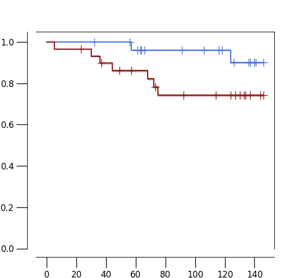

km2
import sys
import matplotlib
import matplotlib.pyplot as plt
import kaplanmeier as km
import pandas as pd
import numpy as np
def read_by_roi(n):
f = open(n)
m = []
by_roi = {}
roi_to_patient = {}
race = {}
for l in f:
l = l.rstrip("\n")
ll = l.split("\t")
t_patient = ll[-2]
t_roi = ll[-3]
t_score = float(ll[-1])
t_race = ll[1]
roi_to_patient[t_roi] = t_patient
by_roi.setdefault(t_roi, [])
by_roi[t_roi].append(t_score)
race[t_patient] = t_race
f.close()
return by_roi, roi_to_patient, race
def read_samples(f_list):
agg_by_roi = {}
agg_roi_to_patient = {}
agg_race = {}
for s in f_list:
by_roi, roi_to_patient, race = read_by_roi(s)
for t_roi in by_roi:
agg_by_roi.setdefault(t_roi, [])
agg_by_roi[t_roi].extend(by_roi[t_roi])
for t_roi in roi_to_patient:
agg_roi_to_patient[t_roi] = roi_to_patient[t_roi]
for t_patient in race:
agg_race[t_patient] = race[t_patient]
return agg_by_roi, agg_roi_to_patient, agg_race
def read_survival(n):
f = open(n)
h = f.readline().rstrip("\n").split("\t")
m = {}
clinical = {}
for l in f:
l = l.rstrip("\n")
ll = l.split("\t")
dd = dict(zip(h, ll))
m[ll[0]] = [int(dd["status"]), int(dd["time"])]
clinical[ll[0]] = {"age": dd["age"], "stage": dd["stage"], "grade": dd["grade"], "regionalnodes":dd["regionalnodes"], "bmi":dd["bmi"], "dm":dd["dm"], "pik3ca":dd["pik3ca"], "treatment":dd["treatment"], "tp53":dd["tp53"], "ras":dd["ras"], "mets":dd["mets"]}
f.close()
return m, clinical
def collapse(by_roi, roi_to_patient, race):
scores = {}
for t_roi in by_roi:
#scores[t_roi] = np.sum(by_roi[t_roi])
scores[t_roi] = np.mean(by_roi[t_roi])
by_patient = {}
for t_roi in roi_to_patient:
t_patient = roi_to_patient[t_roi]
by_patient.setdefault(t_patient, [])
by_patient[t_patient].append(scores[t_roi])
m_new = []
for t_patient in by_patient:
#new_score = np.mean(by_patient[t_patient])
#new_score = np.max(by_patient[t_patient])
new_score = np.min(by_patient[t_patient])
m_new.append([race[t_patient], t_patient, new_score])
print(m_new[-1])
return m_new
if __name__=="__main__":
M2 = [\
"18 Ki67 KIFC1--6 HIF1a.txt", \
"5 CD11c FOXP3 pHH3 ECadherin--5 CD11c FOXP3 pHH3 ECadherin.txt", \
"18 Ki67 KIFC1--5 CD11c FOXP3 pHH3 ECadherin.txt", \
"6 HIF1a--6 HIF1a.txt", \
"5 CD11c FOXP3 pHH3 ECadherin--6 HIF1a.txt", \
"3 CD11c pHH3--6 HIF1a.txt", \
"18 Ki67 KIFC1--8 PLK1 PanCK Ki67.txt", \
"16 PanCK VEGF ECadherin--5 CD11c FOXP3 pHH3 ECadherin.txt", \
]
M1 = [\
"20 CD31 CD45RA--20 CD31 CD45RA.txt", \
"13 CD31 Vimentin AR--19 PLK1 PD1.txt", \
"12 CD16 CD163 CD68--4 Vimentin AR PDL1 PLK1.txt", \
"1 CD16 CD163 PDL1--19 PLK1 PD1.txt", \
"12 CD16 CD163 CD68--14 CD45 CD45RA CD45RO.txt", \
]
samples = None
sample = sys.argv[1]
if sample=="M1":
samples = M1
elif sample=="M2":
samples = M2
elif sample=="both":
samples = M1 + M2
agg_by_roi, agg_roi_to_patient, agg_race = read_samples(samples)
m = collapse(agg_by_roi, agg_roi_to_patient, agg_race)
#fw = open("survival.AA.all.7.txt", "w")
fw = open("survival.AA.all.module.%s.h" % sample, "w")
#fw = open("survival.AA.all.validated.txt", "w")
fw.write("patient\trace\tstage\tage\tAAscore\ttime\tstatus\tgroup\tregionalnodes\tbmi\tdm\tpik3ca\tgrade\ttreatment\ttp53\tras\tmets\n")
#surv = read_survival("clinical.data.2.sort.jun29")
surv, clinical = read_survival("patient.queries.key.attributes.complete")
avg = np.mean([x[2] for x in m])
good_patient = []
time_event = []
censoring = []
y = []
for x in m:
t_patient = x[1]
t_race = x[0]
t_score = x[2]
tp = t_patient
if t_patient in surv:
good_patient.append(t_patient)
time_event.append(surv[t_patient][1])
censoring.append(surv[t_patient][0])
t_group = None
if x[2]>avg:
y.append(1)
t_group = "high"
else:
y.append(0)
t_group = "low"
fw.write("%s\t%s\t%s\t%s\t%f\t%d\t%d\t%s\t%s\t%s\t%s\t%s\t%s\t%s\t%s\t%s\t%s\n" % (t_patient, t_race, clinical[tp]["stage"], clinical[tp]["age"], t_score, surv[t_patient][1], surv[t_patient][0], t_group, clinical[tp]["regionalnodes"], clinical[tp]["bmi"], clinical[tp]["dm"], clinical[tp]["pik3ca"], clinical[tp]["grade"], clinical[tp]["treatment"], clinical[tp]["tp53"], clinical[tp]["ras"], clinical[tp]["mets"]))
else:
print("patient", t_patient, "is missing")
#time_event = [surv[x[1]][1] for x in m]
#print(time_event)
fw.close()
dx = {"time": time_event, "censoring": censoring, "group": y}
df = pd.DataFrame(data=dx)
#df = km.example_data()
time_event = df["time"]
censoring = df["censoring"]
y = df["group"]
print(df)
results = km.fit(time_event, censoring, y)
km.plot(results, cmap=[(65/255, 105/255, 225/255), (136/255, 8/255, 8/255)], title="", width=6, height=5.5, full_ylim=True, legend=0)
print(results["logrank_P"] / 2)
plt.show()
Running Command
python3 km2.py bothResults
